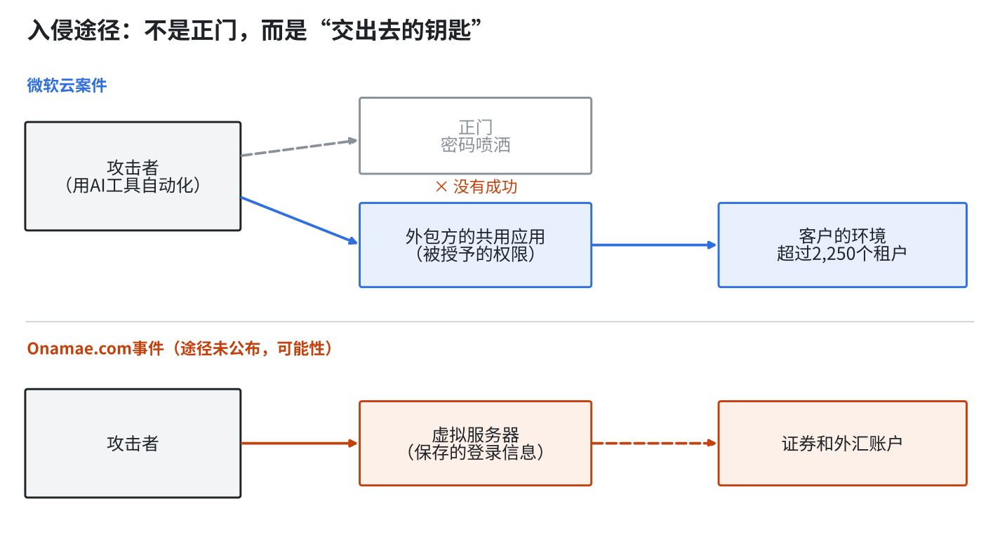
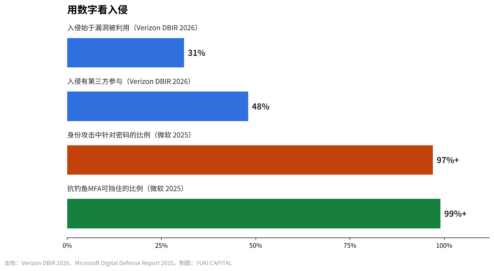
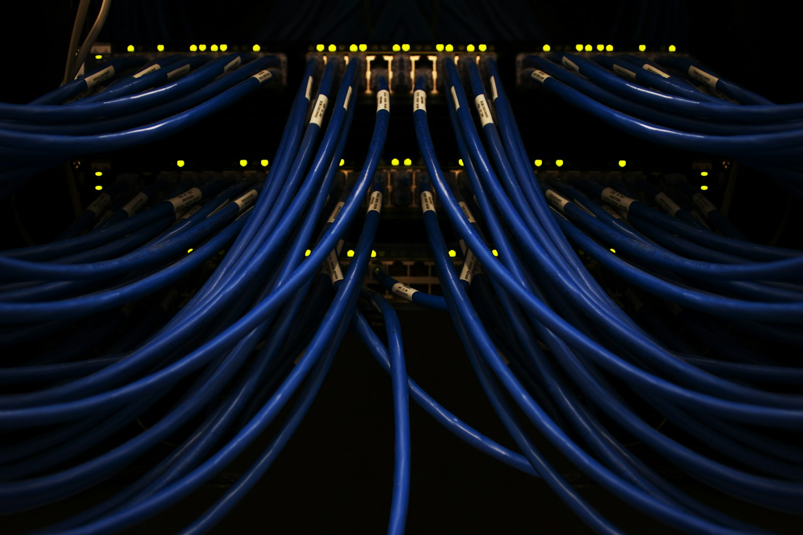

没有比矛更强的盾：从微软云案件和Onamae.com事件看防守的技术与极限
2026年10月21日和22日，规模和对象完全不同的两起入侵在同一周被公开。
一起是使用微软云的公司经由外包方的应用遭到攻击，另一起是日本Onamae.com的虚拟服务器遭到非法入侵。
身在东京的我，用一手资料依次确认：攻击者如何进入、该如何应对、大企业如何防守，以及这类攻击实际上能否防住。
两起事件发生了什么
微软在10月21日公开了据称与中国政府合作的组织Storm-0940的活动。超过2,250个租户（签约云服务的组织单位）遭到每分钟2,900次的登录尝试。失败次数超过15万1,000次。微软明确表示，自身的系统没有被攻破。
入口是外包方的云备份应用。被很多公司共同使用的ConnectWise Cloud Backup（原SkyKick）遭到劫持，攻击者利用授予该应用的权限进入了客户的环境。据说有的案例从锁定目标到取得管理员权限不到3个小时。攻击使用了为渗透测试而公开的多智能体AI工具ARTEX。
Onamae.com的事件发生在用于外汇自动交易等用途的虚拟专用服务器（VPS）服务上。GMO在10月19日接到用户咨询后开始调查，20日确认了恶意程序，21日凌晨4点起停止了所有套餐。在22日的第二次通报中，GMO表示收到了交易账户出现非法操作的报告，保存在服务器上的登录信息可能已被窃取。可能受影响的服务器有26,739台，入侵途径尚未公布。根据使用条款，赔偿仅限于连续24小时以上完全无法使用的情况，上限为一个月的月费。
| 项目 | 微软云案件 | Onamae.com事件 |
|---|---|---|
| 公开 | 2026年10月21日（公司安全博客） | 10月21日第一次通报，22日第二次通报 |
| 被盯上的地方 | 外包方共用应用的权限 | 虚拟服务器及保存在其中的登录信息 |
| 规模 | 超过2,250个租户，每分钟2,900次尝试 | 可能受影响26,739台 |
| 本体是否被攻破 | 否（公司明确表示） | 调查中（途径未公布） |
| AI的参与 | 滥用渗透测试AI工具ARTEX | 未公布 |
如何进入：共同点是“交出去的钥匙”
两起事件的规模和对象不同，但被盯上的地方有共同点。攻击者没有砸开正门，而是用了早已交出去的钥匙。
在微软的案件中，对大量账户逐一尝试密码的攻击（密码喷洒）在10月10日到14日之间进行，但没有成功。突破口是客户为了业务而授权给应用的权限。在Onamae.com的事件中，用户为了自动交易而保存在服务器上的证券公司和外汇公司的登录信息，可能成为了进入账户的入口。
用专业术语来说，这叫供应链入侵。无论自己的公司守得多严，只要连接的外部公司、托管数据的外部系统被攻破，攻击者就会从那里进来。Verizon的2026年调查（DBIR）显示，31%的入侵始于漏洞被利用，48%的入侵有第三方参与。日本IPA的“信息安全十大威胁2026”中，组织篇的第二位也是针对供应链和外包方的攻击。

AI改变了进攻一方的速度
这次引人注目的是攻击中使用了AI。ARTEX原本是为防守方查找自身弱点而公开的工具，却被转用于攻击，同时对大量租户持续发起尝试。
Anthropic也在2025年11月公开了一个案例：自家的AI被疑有国家背景的组织用于间谍活动，据说大部分工作由AI自主完成。攻击步骤一旦自动化，尝试就会以人力追不上的速度反复进行。
另一方面，防守方的时间并没有缩短。谷歌旗下Mandiant的2026年报告（M-Trends）显示，从入侵到被发现的天数中位数为14天。在被察觉前的这两周里，攻击者会扩大权限、带走信息。IBM的调查显示，每起数据泄露的平均成本在2025年为444万美元，2026年为499万美元。


大企业如何防守
大企业的防守，不是再加一个软件的问题。思路本身已经变了。
第一是以“会被入侵”为前提来设计。美国NIST在SP 800-207中提出的零信任，不以公司内外来决定信任，每次访问都要确认。2024年的网络安全框架2.0在识别、保护、检测、响应、恢复这5项之外加入了“治理”，要求把防守作为经营责任来对待。
第二是多因素认证。微软在2019年表示，多因素认证可以挡住99.9%的账户攻击。该公司2025年的报告指出，超过97%的身份攻击针对密码，而抗钓鱼的多因素认证（如物理安全密钥）可以挡住99%以上。这次密码喷洒也没有成功。
第三是缩小交给外部公司的权限，并定期复查。如果业务应用一直持有接近管理员的权限，那么该应用被劫持的瞬间，公司的整串钥匙就会一起被交出去。
用户和小公司如何应对
小公司用不了大企业那样的预算。即便如此，很多有效的对策更取决于功夫而不是金钱。
Onamae.com第二次通报要求的应对是：从问题服务器以外的终端修改密码、注销所有已登录的终端、确认登录记录、开启两步验证、更换重复使用的密码、警惕借事件之机的钓鱼。这些今天都能做。IPA也把不重复使用密码、使用多因素认证列为个人的基本对策。
另一个重要的点是少托管。不要把证券账户的登录信息放在服务器或云上。注册会员时，不填没有也能使用的项目。每年梳理一次交给业务应用的权限。输入的信息会留在托管方，托管方一旦被攻破，就会与自己的防守无关地外泄。
实际上能防住吗
先说结论，我认为无法完全防住。正如进攻是最好的防守，进攻方只要找到一个漏洞，防守方却必须堵住所有漏洞。AI让攻击尝试自动化后，这个差距会进一步拉大。
不过，损失的大小是可以改变的。微软的案件中，密码喷洒也没有成功，基本的防守至少在正门起了作用。以会被入侵为前提来设计，少交出钥匙，具备尽早察觉的机制。把防不住的攻击设计成不致命的伤，是做得到的。
我是这样看的
没有比矛更强的盾。所以我不以软件的数量来考虑防守。我考虑的是信息放在哪里、把钥匙交给谁。
共享办公的会员信息没有放在自己公司的系统里，而是用软件公司的服务来管理。银行和证券账户我都开了两步验证，野村证券的账户设置成只接受电话口头下单。如果无法从网上交易，即使有人进来也下不了单。
我原本认为GMO是防守很强的公司。即便如此还是被攻破了。正因为如此，公司需要持续在网络安全上投入，用户需要把交出去的信息保持在最少。从投资的角度看，自己同时握有盾和矛的公司，在这样的局面下或许更强。
来源
- 微软安全博客“Storm-0940 uses ARTEX agentic AI in ConnectWise supply chain compromise” https://www.microsoft.com/en-us/security/blog/2026/10/21/storm-0940-uses-artex-agentic-ai-connectwise-supply-chain-compromise/
- GMO互联网集团 警示（第二次通报） https://group.gmo/info/alert/20261022/
- Onamae.com 公告（第一次通报） https://www.onamae.com/news/article/11584
- Onamae.com 公告（第二次通报） https://www.onamae.com/news/article/11593
- IPA“信息安全十大威胁2026” https://www.ipa.go.jp/security/10threats/10threats2026.html
- Verizon“Data Breach Investigations Report” https://www.verizon.com/business/resources/reports/dbir/
- Mandiant“M-Trends” https://cloud.google.com/security/resources/m-trends
- IBM“Cost of a Data Breach Report” https://www.ibm.com/reports/data-breach
- Anthropic“Disrupting the first reported AI-orchestrated cyber espionage campaign” https://www.anthropic.com/news/disrupting-AI-espionage
- NIST SP 800-207“Zero Trust Architecture” https://csrc.nist.gov/pubs/sp/800/207/final
- NIST“Cybersecurity Framework 2.0” https://www.nist.gov/cyberframework
- 微软“One simple action you can take to prevent 99.9 percent of attacks on your accounts” https://www.microsoft.com/en-us/security/blog/2019/08/20/one-simple-action-you-can-take-to-prevent-99-9-percent-of-account-attacks/
- Onamae.com 租用服务器使用条款 https://www.onamae.com/agreement/a_ag/server.html
- IPA“账户的安全管理” https://www.ipa.go.jp/security/anshin/measures/account_security.html
- CISA“Implementing Phishing-Resistant MFA” https://www.cisa.gov/sites/default/files/publications/fact-sheet-implementing-phishing-resistant-mfa-508c.pdf
照片：FlyD／Scott Rodgerson（Unsplash）。图表由YUKI CAPITAL制作
每天的数字与判断，记录在X上。